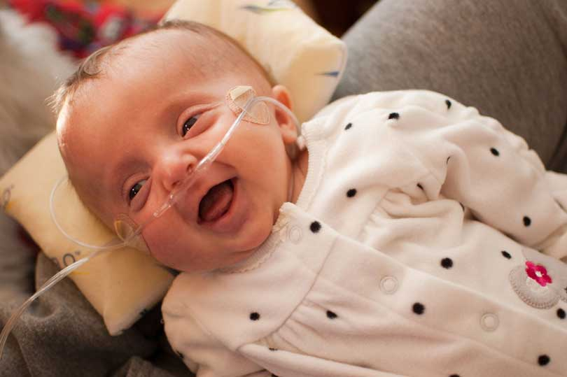

The Place Proudly Supports
String of Pearls
Osteogenesis imperfecta (OI) is a rare genetic disorder characterized by fragile bones that break easily. It is also known as "brittle bone disease." OI is caused by an error in a gene that affects the body’s production of collagen, which is found in bones and other tissues. The severity of the condition depends on the type of gene mutation. Some forms of OI are livable and cause bones to break easily, while other forms are lethal. The following website has more information on this disease http://www.oif.org/.
In 2012 this rare condition impacted our salon in a very personal way. One of our stylist received devastating news during a routine ultrasound that her unborn son, Logan, had the most lethal version of OI.
Through an amazing organization called String of Pearls, which is set up to help families navigate the difficulties of carrying a terminally ill baby, Jamie and her husband Andy were able to meet another couple in the midst of a similar struggle in the Denver area. Leslie and Ryan Nichols were carrying a baby girl, Megan Clara, who was also diagnosed with OI. It was a blessing for both families to get to know each other and share their feelings and experiences about coping with this tragic condition.
A few days after meeting the Nichols family, Jamie un-expectantly went into labor. Logan Andrew Stewart was born on August 9, 2012 and passed away 54 minutes later. Jamie and Andy were incredibly grateful God allowed them to meet their precious baby boy if only for a short time.
Five days later Megan Clara Nichols was born. Against all odds she is now seven months old. Due to her rare condition Megan requires specialized care and treatments. Many of these costs are not covered by the Nichols’ insurance plan. In order to help the Nichols family with some of these overwhelming expenses, we have established Megan’s Fund. We are asking for friends, family, and clients of The Station to help us sponsor the Nichols in order to help with their overwhelming medical bills. To learn more about Megan and her journey please check out her blog, Miss Megan Clara: A journey through the world of OI
It is our goal to honor Logan’s memory and at the same time bless the Nichols family. Checks can be made out to Megan’s Fund and sent to 6147 Moore St. Arvada, CO 80004 or dropped off at the salon.
We cannot do justice to the String of Pearls organization in a few short sentences, so please follow this link to learn more about them or donate http://stringofpearlsonline.org.
Every fall we will be holding a silent auction in Logan’s memory to raise money for String of Pearls and the Nichols family. If you or someone you know is interested in donating please contact Jamie at 303-877-5836.
Thank You!
Check out String of Pearls
St Baldrick's Foundation
Shaving heads to find a cure for childhood cancer
Check out St Baldrick's Foundation